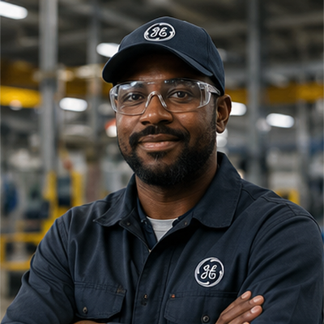
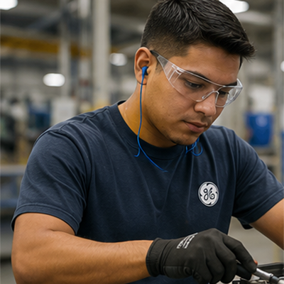

Personas, page heat, and the redesign action plan.
Voice-of-customer personas, page-level engagement heatmap, and a six-step Hoshin action plan to redesign the FLIGHT DECK Activation Hub for daily and frequent users.
01 VOC Personas
Seven persona archetypes mapped to the Activation Hub audience. Population, tools, functional jobs, aspirations, pain points, emotional and social jobs.

Strategic leader of a business or multiple key functions. Oversees alignment and optimization of critical value streams. Accountable to deliver operational and financial results quarter after quarter.
Tools
- Personal laptop and/or mobile device
- Enterprise tech: MIRO, M365, Wingmate, Smartsheet
- Bowler Chart
- Functional specific (ERP, MES)
- All FLIGHT DECK fundamentals & behaviors
Example Roles
- Strategic Tier 2 Leaders
- Leadership Forum, SALT
Functional Jobs
- To make it real, you have to slow to focus
- It all starts with what the customer cares about
- Simplified action plans focused on critical challenges
- More time on the 10 that matter outside of the thousand things to do
- Connect organization to what good looks like
- Get the right team to problem solve to the gap
Aspirations
- Say/Do on the KPIs
- Keep it simple
- Frequency of touch trumps quality of touch
- Leaders need to be leaders
Pain Points
- MORs are inconsistent — some interactive, some report-out only
- Over-indexed on EB and above, underwhelming the LP and SP workforce
- Action plans not penetrated through the business
- Too much time on analysis paralysis
- Disconnect from Genba: conference-room processes don't align with real-life execution
Emotional / Social Jobs
- Teams desire clarity and confidence in their ability to impact KPIs
- Help me not look like an idiot in front of peers when reporting Flight Deck KPIs
- Help me communicate, inspire, and mobilize my team
Quotes

People leader responsible for SQDC of team and function/plant. Financial accountability to P&L. Customer accountability to deliver what's needed.
Tools
- 5S, Daily/Visual Management, Standard Work, VSM
- Action planning, KPI bowlers, APPS/SPS
- Financial management (budget/P&L)
- People — leadership, development, org design
- ERP
Example Roles
- Product Line Leaders
- Part Family Leader
- ED Technical Product Management
Functional Jobs
- Alignment to functional priorities
- Day-to-day management of resources (labor, P&E, material)
- Hire, coach, develop talent
- SQDC performance and problem solving
- Develop and execute strategy, manage budget
Aspirations
- Could see in Japan that CI is a way of life — nice, clean, beautiful, but still functional
- Need clear communication of the "why" behind lean principles
- Experiential learning as a key driver for adoption
- Customers need localized training materials in native languages
Pain Points
- Insufficient communication of the "why"
- Limited experiential learning
- Lack of localized training materials
- Cross-site collaboration hindered by time-zones
- Resistance from lack of appreciation for what "good" looks like
Emotional / Social Jobs
- Help me not look bad in front of leaders/peers because I'm not using FLIGHT DECK
- I want to run a tighter ship using FLIGHT DECK
- Team is OVERWHELMED with fires — help us prioritize
Quotes
People leader accountable for a team of Individual Contributors or junior People Leaders. Manages a KPI or multiple KPIs.
Tools
- Personal laptop and/or mobile device
- Enterprise tech tools (MIRO, M365, Wingmate, Smartsheet)
- Functional specific (ERP, MES)
- FLIGHT DECK: operating cadence, daily visual management, at-point problem solving
Example Roles
- Senior Technical Product Manager
- Business Leader for a site/cell
- Materials leader
Functional Jobs
- Accountable to align team priorities to function/leader
- Manages a portfolio of products or processes
- Coaches and develops people
- May be KPI or Process Owner
- Utilizes (or should utilize) daily management
Aspirations
- Alleviate team pain points & reduce fire-fighting
- Remove barriers to meeting customer demand
- Use CI to create capacity for more strategic work
- Standard work, daily management, WORs to improve efficiency
Pain Points
- Demand exceeds capacity — ruthless prioritization & disappointed customers
- Asked to deploy FLIGHT DECK but unsure of where to start; no FLIGHT DECK coach
- Constant fire drills
- Lots of rework & duplication, limited quality throughput
Emotional / Social Jobs
- Like leading a team with autonomy
- Want recognition as a role model regarding FLIGHT DECK
- Want to increase scope/reach through promotion
- Help me create capacity by leveraging FLIGHT DECK so we can be more strategic
Quotes

Salaried or hourly supervisor of operators at a shop. May not have decision-making responsibility for hiring and performance management.
Tools
- Shared device on shop floor; may have laptop and mobile
- Machines, direct labor tools
- Software: Ops Vision, kanbanbox
- FLIGHT DECK: APPS, Daily Mgmt, Standard Work, 5S, Visual Mgmt, Flow/Pull, VSM
Example Roles
- Shift Supervisors
- Team Lead / Coach
- Supply Planner
Functional Jobs
- Lead shift meetings and daily management huddles
- Ensure safety, quality, delivery, productivity for shift
- Continuous improvement and training of standard work
- Support team with problem solving and escalating
- Ensure successful shift handover
Aspirations
- Help operators solve problems
- Help operators be successful in daily work
- Help operators collaborate on standard work so jobs become routine
- Want operators to feel psychologically safe to surface concerns
Pain Points
- No formal training, only on-the-job from Kaizen events
- Tools on the hub too advanced to feel comfortable explaining
- Manager pushes delivery and overrides systems
Emotional / Social Jobs
- Help me ensure I can finish my day on time
- Sense of achievement around team performance
- Job security through connectedness and impact of team's work
- Help me empower my team to solve problems and run effectively when I'm not around
- Look like a strong & respected leader
Quotes

Individual Contributor in manufacturing, assembly. Includes direct labor and indirect factory support functions (Material Handling, Maintenance, Setup).
Tools
- Shared device on shop floor, machines, direct labor tools, kanbanbox
- FLIGHT DECK: APPS, Daily Mgmt, Standard Work, 5S, Visual Mgmt, Flow/Pull
Example Roles
- Direct Labor
- Indirect Factory (Material Handling)
- Parts Manufacturing
Functional Jobs
- Stay safe
- Make quality parts
- Produce parts to takt
- Adhere to standard work & improve as appropriate
- Escalate problems
Aspirations
- Predictability in work day
- Work smarter, not harder
- Want to be trusted to do my job
- Alignment between what I'm asked to do and what I'm measured on
Pain Points
- Don't know how FLIGHT DECK applies to me
- Pull system created in Kaizen, then asked to break it to get parts out the door
- Leaders' say-do ratio and follow-up not great
- 5S not taken seriously; no accountability
- Conflicting messaging from systems and leaders
Emotional / Social Jobs
- Feel that FLIGHT DECK is a buzzword or "Flavor of the Month"
- Don't feel overwhelmed when forced to firefight
- Help me get my manager off my back in high-pressure situations
- Help me know what success looks like
Quotes
Individual Contributor who works in a transactional space (Digital Technology, Engineering, etc.) with focus in a specific domain or area of expertise.
Tools
- Personal laptop, mobile, or advanced engineering hardware
- Enterprise tech (MIRO, M365)
- Functional specific tools (CAD, Rally)
- AI productivity: AI Wingmate, Copilot, etc.
- FLIGHT DECK: problem solving, operating cadences
Example Roles
- Senior Architect, Senior Engineer
- Supplier Fulfillment Leader
- Contract Performance Manager
- Manufacturing / Quality Engineer
- Staff Technical Product Manager
Functional Jobs
- Deliver on priorities, manage stakeholder relationships
- Strategic, project-focused, or operational work
- Understand how work aligns to business outcomes
- Accountable owners
Aspirations
- Be perceived as a subject matter expert
- Understand how to grow career
- Proactively manage week/day according to planned deliverables
Pain Points
- No clear way to prioritize when multiple stakeholders/customers
- May not have a clear definition of what "good" looks like across SQDC
- Constantly pulled into firefighting / reactive work
Emotional / Social Jobs
- Feel like a valuable member of team, leader, customer
- Continually upskill via internal/external benchmarking
- Connect with like-minded peers
- Rise above peers as a FLIGHT DECK thought leader
Quotes

Primarily deployed de-centrally at Genba. Responsible for accelerating transformation through teaching, guiding, and coaching individuals and teams on FLIGHT DECK application. Range of Individual Contributors and People Leaders across all levels and functions.
Tools
- Personal laptop, mobile device
- Enterprise tech (MIRO, M365)
- FD Activation Hub
- Function/Site specific tech: Ops Vision, etc.
- AI Productivity: AI Wingmate, etc.
- FLIGHT DECK: all tools
Example Roles
- FLIGHT DECK Senior Leader
- Executive FLIGHT DECK Leader
- Functional Lean Leader
- Site Lean Leader
Functional Jobs
- Teach, guide, and coach application of FLIGHT DECK
- Going to genba (full-time job is coaching)
- Be Subject Matter Expert in FLIGHT DECK Fundamentals/Tools
- Work with Critical KPI Owners to show progress
- Find balance point with stakeholders (process & results)
- Prioritization is most important — help people learn how to prioritize
- Bring the material closer to the people; make accessible
Aspirations
- Common way to plan, sequence, schedule, build a realistic consensus plan
- Get leaders out and practicing — too many focused on deliverables, not the process
- Observe behavior of leaders — are they asking the right questions?
- Layer in a simple approach
Pain Points
- Confused about FLIGHT DECK organization outside their team — too many players, too many opinions
- Trying to accommodate Exec Fresh Eyes — need to get own people in these events
- Almost anything can be deemed FLIGHT DECK — hard to understand role and depth
- Perception of role — facilitator? driver?
- GE culture still prohibitive to the new culture
- People say "I'm waiting to be trained"
- Creating simulations to teach FLIGHT DECK because none readily available
Emotional / Social Jobs
- Gain confidence in the system view of FLIGHT DECK through reps
- Understand why there is cultural resistance
- Some imposter syndrome; have to be cheerleader and motivator
- Presence goes a long way; storytelling; show up day-in and day-out
- Help me share successes; help me gain credibility through ability to influence others
Quotes
02 Activation Hub Page Heatmap
Page-level engagement scored High / Medium / Low against all-time and 7-day visit data. Source: SharePoint analytics for FLIGHT DECK Activation Hub site pages.
Top Site Pages — All-Time
| Page | Created | Total Views | Unique Viewers | 7-Day Visits |
|---|---|---|---|---|
| TopicHome | 1/9/2024 | 219,253 | 29,734 | 4,326 |
| Standard Work v1 | 1/24/2024 | 33,829 | 12,215 | 545 |
| Problem Solving v1 | 1/24/2024 | 25,990 | 9,209 | 447 |
| Templates Library | 9/10/2025 | 19,684 | 8,027 | 833 |
| Action Planning v1 | 1/24/2024 | 18,867 | 8,269 | 265 |
| Daily & Visual Management v1 | 1/24/2024 | 19,559 | 7,743 | 298 |
| Value Stream Management v1 | 1/24/2024 | 10,013 | 4,453 | 158 |
| Operating Cadences v1 | 1/24/2024 | 8,830 | 4,408 | 140 |
| 5S (old) | 2/19/2024 | 7,865 | 3,926 | — |
| Flow/Pull | 2/4/2025 | 5,490 | 3,113 | — |
| Kaizen Event | 1/31/2024 | 7,193 | 2,509 | — |
| Respect for People v1 | 1/24/2024 | 3,912 | 2,425 | — |
| Continuous Improvement v1 | 1/24/2024 | 3,473 | 2,126 | — |
| Prompt Library | 2/4/2026 | 1,450 | 687 | 677 |
| Video Examples | 3/12/2026 | 1,119 | 666 | 167 |
Behaviors & Fundamentals — Heat Verdict
| Page | Type | Heat | Top Asset | Top Asset Views |
|---|---|---|---|---|
| Customer Driven | Behavior | Medium | Template_VOC-pulse-templates | 759 |
| Continuous Improvement | Behavior | Medium | Not Failure-Learning (video) | 5,334 |
| Respect for People | Behavior | Medium | Learning_Respect for People Overview | 988 |
| Flow/Pull | Fundamental | Medium | Overview_Introduction to Pull | 2,095 |
| 5S | Fundamental | Medium | Standard 5S Color Standards | 3,261 |
| Operating Cadences | Fundamental | Medium | Template Standard Bowler v4 | 5,455 |
| Value Stream Management | Fundamental | Medium | Playbook_Value Stream Analysis | 8,594 |
| Action Planning | Fundamental | Low | Template Action Plan (Jan 2026) | 59,594 |
| Problem Solving | Fundamental | Medium | Template At-Point Problem Solving | 28,504 |
| Daily & Visual Mgmt | Fundamental | High | Template Standard Daily Mgmt Board | 14,572 |
| Standard Work | Fundamental | High | Template Mfg Standard Work All | 11,533 |
03 Top Templates — Wingmate Curation Targets
Top 20 templates by all-time views. Target list for Wingmate prompt curation and instruction-for-use overlay.
| Template | Hub Page | Total Views | Unique Viewers |
|---|---|---|---|
| Template Action Plan (Jan 2026) | Action Planning | 59,594 | 8,619 |
| Template At-Point Problem Solving v1 | Problem Solving | 28,504 | 5,011 |
| Template Structured Problem Solving v1.2 | Problem Solving | 20,484 | 3,731 |
| Template Mfg Standard Work All v2.2 | Standard Work | 11,265 | 1,564 |
| Cell Daily Mgmt Board Template | DVM | 10,084 | 1,832 |
| Template SW Detailed Job Instruction Activity | Standard Work | 9,348 | 1,769 |
| Playbook Value Stream Analysis | VSM | 8,538 | 1,389 |
| Detailed Job Instructions CONTROLLED | Standard Work | 8,389 | 1,726 |
| Detailed Job Instructions UNCONTROLLED | Standard Work | 8,052 | 1,610 |
| Leader Standard Work — Daily/Weekly Monthly | Standard Work | 7,773 | 1,918 |
| Leader Standard Work Daily Weekly | Standard Work | 7,361 | 1,904 |
| Template Trystorm v1 2024 | Action Planning | 7,223 | 2,064 |
| Master Instruction TEMPLATE Intermediate | Standard Work | 6,816 | 1,441 |
| LSW Template Automated Option | Standard Work | 6,468 | 1,689 |
| Leader SW Daily Weekly Monthly Quarterly | Standard Work | 5,545 | 1,499 |
| Template Standard Bowler v4 | Operating Cadences | 5,455 | 1,262 |
| RACI Template | — | 5,325 | 1,218 |
| Fishbone Diagram Template | Problem Solving | 5,118 | 1,303 |
| Template Mfg Standard Work v2.0 2025 | Standard Work | 4,985 | 1,303 |
| Standard WOR Agenda Template | Operating Cadences | 4,228 | 939 |
04 Current State vs Future State
Where the hub is today and the future-state vision for the redesign. The gap between these two columns is the work.
Today
- Single access point for standards & tools
- Persona-based portals (FDL & Plant Leader)
Vision
- Persona-based learning paths
- Point-of-use instruction for templates
- Updated layouts
- Chat with FD videos
- In-language audio translation
05 Supermarket Action Plan
5S framework applied to the Activation Hub content supermarket. Owners and rough timing.
| Stage | Action | Owner | Timing |
|---|---|---|---|
| Sort | Build the list of most pulled items. Scope: homepage, 8 fundamentals, 3 behaviors, libraries. Highest / Medium / Lowest pulled. | Stephen VILT, Videos, PDFs, Prompts, Miro | ~2–3 weeks |
| Set in order | Low effort metadata updates | Anam | ~3 weeks |
| Set in order | Declutter navigation by removing low-pull items | Anam | ~3 weeks |
| Shine | Instructions for use for highest pulled | Karla / Amanda | — |
| Standardize | Determine SW artifacts: Change log | — | — |
| Sustain | Collect targeted feedback for high pull items | — | — |
Bttr Start date: TBD pending kickoff revival
06 Hoshin Action Plan
Six-step prioritized intervention list for Activation Hub redesign. Step → sub-step format. Owner, dates, KPI per row when populated.
- Reduce clicks to access examples on the site by adding an examples repository
- Reduce clicks to access templates on the site by adding a templates repository
- Create visual separation of web parts and links on homepage to improve visibility
- Structure links and webparts based on priority and user visit frequency
- Remove redundant links and callouts on pages
- Define standard format for examples and best practices
- Create welcome video for navigating Hub
- Rename all documents to enhance SEO
- Update metadata for Wingmate to reflect name changes
- Research avenues for communication of updates
- Understand pain points within each template
- Present ideas regarding hub redesign (learner, practitioner, coach)
- What other communication would you like to see on the Hub?
- Recruit FDO to help with VoC interviews
Cleanup Standard
- Remove duplicates from site pages and ensure they are in the documents, images, or videos.
- Sort in appropriate folders by (a) Page (b) Content type — Templates, Best Practice Examples, Learning Resources, Decorative Image, Key models/slides, Videos.
Per board notes: AB-Behaviors, associated methods, remove dupes · AK-Fundamentals, Homepage and then create folders
07 Examples Library Inventory
Published example assets per fundamental as of two snapshot dates. Used to size the gap and target draft cleanup.
Snapshot A — Earlier Inventory
PS · 4 / 10 pub
SW · 1
OC · 0
DVM · 2
P&F · 1
VSM · 0
5S · 1
AP · 2
Snapshot B — Updated Inventory
PS · 11 / 19 pub
SW · 2
OC · 1
DVM · 3
P&F · 2
VSM · 2
5S · 1
AP · 0
Gold Standard Criteria
- The example demonstrates implementation of a FLIGHT DECK process from start to end (e.g., all parts of 5s)
- The example specifies results / increase in productivity / reduction of waste achieved (e.g., over 80 items tagged and >250 sq ft of floor space free of waste)
- The example demonstrates a unique and relevant application (e.g., 5s in a GE Aerospace data center vs 5s at the shop floor)
- The example meets our formatting and presentation guidelines
08 Survey Experiment Log
Survey iterations across November–February to lift response rate and conversion. Findings inform the action plan above.
| Experiment | Status / Results | Timing |
|---|---|---|
| Embed survey (no clicks) on homepage for a week | 28 / 2,515 · 1% conversion | 1st week of November |
| Link Survey on the homepage + content quality questions | 4 / 29 · 14% conversion | 1st week of December |
| Improve messaging on the WHY of the survey | 25 / 3,852 · 0.6% conversion | 1st week of January |
| Slido embed customization | Same as above | 1st week of January |
| Engage DT for SharePoint integration | Pending | 1st week of February |
| Keep the survey evergreen (always open) | Pending | — |
| Before/after expectations on survey | Pending | — |
| Try asking for SSO capture | Pending | — |
Frequency of visit drives ease of navigation.
Daily users find the Hub easy to navigate compared to those who visit monthly or once.
FLIGHT DECK leaders visit on a daily/weekly basis compared to general population that visits less frequently on a weekly/monthly basis.
Users who visit the Activation Hub frequently find it easier to navigate than users who visit once in a while.
09 Facts & Assumptions
From the data
- Non-flight deck more daily or monthly visits
- FLIGHT DECK daily or weekly visits
- More non-flight deck coming for learning
- Most people enter via Jetway → 2x as many FD Leaders go through bookmark
- 1st place outside-AH source: Wingmate
- 2nd place: FD Leaders
- 8.1% response rate
- 649 total respondents
To validate
- Tailoring to people trying to find just templates
- Prioritize Wingmate use cases and user guide
FD Leader persona needs to be prioritized for AH — biggest opportunity to impact.
10 Next Steps · Help Needed · Action Required
Three priorities
- SEO fixes (just do it) — Updating doc titles
- Template improvements (needs an AP) — Storage / Access · Content improvements to the template · Help text / instructions
- Do additional genba walks, mostly focused on FD leaders (~60–80). Need to explain why. Mostly focus on template improvements. Dig into frequency.
Owners
| Item | Owner |
|---|---|
| Brainstorm survey options | — |
| Can SharePoint use any tracking software? | — |
| Identify desired audience, target recent users (last 2 months) | — |
| All who have submitted tickets | Amanda |
| Users in the last 60 days | Stephen |
| FLIGHT DECK Leaders | Sam |
| Questions to ask via Slido | Amanda |
| Angie buy-in? | Sam |
| Permission to send survey — talk to Greg or Karen A. | Amanda |
Data points to watch
Website Performance
- Traffic sources — where visitors come from (search, social, email)
- Bounce rate — % who leave after viewing only one page
- Conversion rate — % who take a desired action
UX Optimization
- Identify popular pages — recognize which pages attract the most views
- Understand navigation paths — click-tracking, time-on-page
- Gauge user engagement — what content keeps users on the page
- A/B testing — compare experiences and pick the winner
11 VoC Question Bank
Source library of questions surfaced from the discovery sticky-stack, organized by theme. Use as input for the next round of genba interviews.
How to Navigate
- Rate ease of use / maneuverability of the site
- How do you get to the hub? Direct link, bookmark, something else?
- Search effectiveness
- On a scale of 1–5, how easy is it to navigate within FLIGHT DECK Activation Hub?
- What is your primary way to navigate to the hub/hub contents? (Bookmark homepage, Jetway, bookmark documents/pages, email communication)
Frequency of Visit
- How often do you visit Activation Hub? Daily, weekly, monthly, once and never returned
Reason to Visit
- Multiple choice of the primary reasons you visit
- What is your main reason for visiting the hub? (Learning, templates, standards, communication)
Other Platforms
- Are there other frequently visited sites in your workflow? If so, what are they?
- Where do you go to find FLIGHT DECK content other than the activation hub? (Wingmate, Learning Central, FLIGHT DECK leaders, my functional leader, GE Aerospace Learning, LinkedIn Learning)
Pain & Delight
- What are your biggest frustrations with the site?
- After you finish a session, what emotion do you feel?
- What do you like least about the activation hub?
- What do you like most about the Activation Hub?
- What are your biggest pain points of the site?
- What content do you consider most useful? (Video series, templates, Field examples, One-Pagers, Overview slide decks, page content)
- NPS — 1–10, how likely would you suggest Hub to a colleague
Genba Walk Follow-Up
- Would you be open to a genba walk where we watch you consume content on the hub?
- Create scenarios and watch journey
Feature / Content Requests
- How would you suggest AI gets incorporated into the hub?
- What content do you feel is missing from the hub?
Standing Data Points
- Reorientation on Hub Page of things that matter most
- Customer journey line to find content
- Remove uncertainty to make conviction
- Limitations of SharePoint vs other platforms
- Citation use and accuracy
- Content refresh or removal